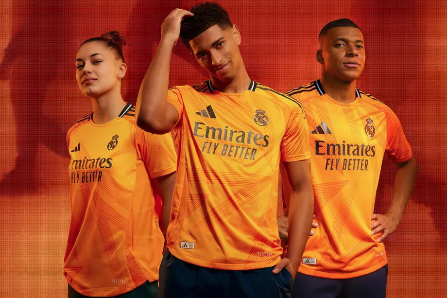

"Le foot comme passeport, le maillot comme souvenirs"
"Voyagez à travers le monde du football, un maillot à la fois."
Plongez dans l'univers des clubs et des équipes de chaque continent. Chaque maillot est une histoire, un souvenir, une culture à découvrir. Explorez, collectionnez et partagez votre passion pour le foot.
"Le football : une invitation au voyage et à la découverte."
À travers chaque maillot, revivez les moments de gloire et les traditions des équipes du monde entier. Que vous soyez fan d'un club local ou d'une équipe lointaine, il y a un maillot qui raconte votre histoire.
Etre fier de son équipe et avec style

"Transformez votre passion du football en une aventure mondiale."
Ici, le maillot de foot est bien plus qu'un simple tissu : c'est un souvenir, une passion, un symbole d'appartenance. Découvrez des maillots de clubs iconiques et des histoires uniques qui vous transporteront aux quatre coins du globe.